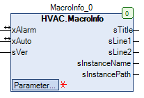

MacroInfo (FB)¶
FUNCTION_BLOCK MacroInfo
Short Description¶
Display of status information for a macroApplication: Visualization
Portrayal¶

Interfaces¶
Inputs¶
Name Datatype
Range
Init-Value
Functional Description
sVersion STRING Version of the macro
Outputs¶
Name Datatype
Range
Init-Value
Functional Description
sTitle STRING Name of the macro
sLine1 STRING Line 1 of the tile
sLine2 STRING Line 2 of the tile
sInstanceName STRING Name of the instance
sInstancePath STRING Path name of the instance
Inputs and outputs¶
Name Datatype
Range
Init-Value
Functional Description
xAlarm BOOL collective alarm message
xAuto BOOL Status message of the operating mode ( 0 = manual mode, 1 = automatic mode )
Setpoints / Parameters¶
Name Datatype
Range
Init-Value
Functional Description
sEditLine1 STRING ‘Line1’ Input value - line 1 of the page frame
sEditLine2 STRING ‘’ Input value - line 2 of the page frame
Functional Description¶
General¶
Input sVersion¶
Input and output xAlarm¶
Input and output xAuto¶
Output sTitle¶
Output sLine1¶
Output sLine2¶
Output sInstanceName¶
Output sInstancePath¶
Visualization¶
Codesys¶
- InOut:
Scope Name Type Initial Comment Input xAlarm BOOL collective alarm message
xAuto BOOL Status message: 0=Hand 1=Auto
sVersion STRING macro version
sEditLine2 STRING ‘’ Line two of the tile
sEditLine1 STRING ‘Line1’ Line one of the tile
Output sTitle STRING Instance name Macro (automatically generated)
sLine1 STRING Line one of the tile
sLine2 STRING Line two of the tile
sInstanceName STRING Instance name (generated automatically)
sInstancePath STRING Instance path (generated automatically)